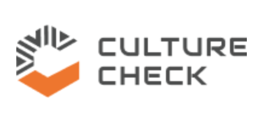

Culture Check — Anti-Black Racism Professional Learning
Designed and facilitated workshop series plus self-paced digital learning modules for early childhood educators and professionals across Ontario. Built reflective learning environments that support educators in confronting bias within themselves and their programs.